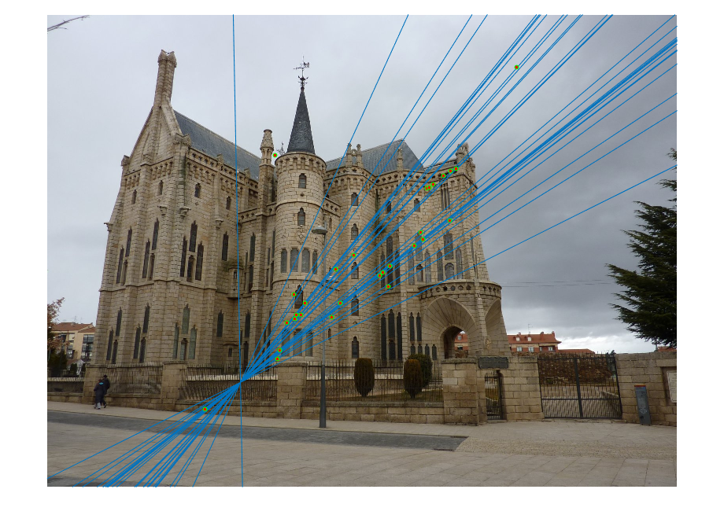

CS 4495 / 6476 Project 3: Camera Calibration and Fundamental Matrix Estimation with RANSAC
In this homework assignment we needed to implement RANSAC to help estimate the fundamental matrix to get better point-to-point matches between images with affine transforms. There were several different parts to this assignment:
- Camera projection matrix
- Estimating the fundamental matrix
- Fundamental matrix estimation with RANSAC
- My extra credit with the normalized and scaled F matrix!
{kind=link}
My attempt at camera calibration on pictures I took of my dog. It looks like a decent amount of the points turned out to actually correspond.
Camera projection matrix
The camera projection matrix M is used to transform the 2-D image coordinates to the 3-D camera coordinates. The matrix M that I obtained can be seen below.
The matrix that we're supposed to obtain is:
{kind=link}
The matrix that I obtained was around the same after a scale of -0.6349 was multiplied to my M matrix:
{kind=link}
The camera center that I obtained with a total residual of 0.0445 was:
{kind=link}
Which is very close to the center in the problem statement of:
{kind=link}
The projection points turned out to be quite similar to the actual points as can be seen below:
{kind=link}
Estimating the fundamental matrix F
The fundamental matrix F contains the information for both the translations and rotations from one image to another. With this information, points on equipolar lines can be matched between the images. F is the equipolar line for <u,v>, while F' gives the equipolar line for <u',v'>.
By using the definition of the fundamental matrix below, one can use SVD to solve the homogeneous linear equation of F, using at least 8 points since the fundamental matrix is rank deficient.
{kind=link}
Results:
The fundamental matrix that I obtained for the base image pair is shown below:
{kind=link}
This yields the equipolar lines below for the given normalized points in the images below:
{kind=link}
{kind=link}
If you click on either of the images above, you will see that the equipolar lines intersect almost exactly with each of the interest points in the corresponding images.
Fundamental matrix with RANSAC
RANSAC (RAN-dom SAmple Consensus), is used to randomly sample the interest points and then score how well the putative fundamental matrix acts on the rest of the interest points. This is used because it is not known which particular 8 interest points would yield the best fundamental matrix for the pair of images. So, RANSAC is the iterative method used to find the optimal matrix for the points.
For each putative F matrix, the distance of the fundamental matrix equation, with a given point, from zero is thresholded by a value delta, which in my case was 5x10-5. If a distance is within this value then the point is considered an "inlier." The fundamental matrix that is used is the one with the most inliers. Therefore, the number of inliers is the score used to compare the different putative fundamental matrices.
My RANSAC code was run over 5,000 iterations so as to reduce the inherent randomness of whether or not the correct fundamental matrix will be found using the random sampling.
Results:
{kind=link}
{kind=link}
Equipolar lines for the Mt. Rushmore image pair using the RANSAC determined fundamental matrix.
Arrow visualization for Mt. Rushmore image pair. 188 inliers were found, but only the 30 best are shown above.
{kind=link}
{kind=link}
Equipolar lines for the Notre Dame image pair using the RANSAC determined fundamental matrix.
{kind=link}
Arrow visualization for Notre Dame image pair. 204 inliers were found, but only the 30 best are shown above.
Extra Credit: Fundamental matrix estimation with normalized coordinates
The estimation of the fundamental matrix can be improved by normalizing the points used. The points are normalized so that they are centered at <0,0> and the points are also scaled so that their average magnitude is √2. The process is explained quite succinctly in this paper on some RPI class website (Equations (1.28) to (1.34) specifically).
The results of the Gaudi image pair without using the normalized coordinates and for 5,000 iterations are seen below:
|  |
{kind=link}
{kind=link}
Equipolar lines for the Gaudi image pair using the RANSAC determined fundamental matrix.
{kind=link}
Arrow visualization for Gaudi image pair. 257 inliers were found, but only the 30 best are shown above.
With the point normalization and only 2,000 iterations, the results are much better and can be seen below:
{kind=link}
{kind=link}
Equipolar lines for the Gaudi image pair using the RANSAC determined fundamental matrix, using the normalized points.
{kind=link}
Arrow visualization for Gaudi image pair. 421 inliers were found, but only the 30 best are shown above.